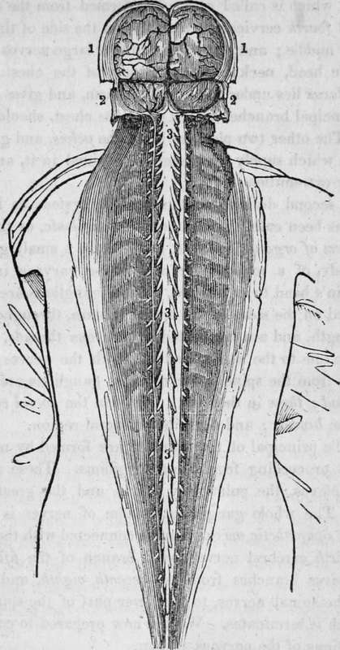

The Nervous System. The Brain, Spinal Marrow, And Nerves. Part 2
Description
This section is from the book "Human Physiology For The Use Of Elementary Schools", by Charles Alfred Lee. Also available from Amazon: Human Physiology, for the Use of Elementary Schools.
The Nervous System. The Brain, Spinal Marrow, And Nerves. Part 2
11. The cerebellum or little brain, is situated at the base and back part of the skull, and in weight it is only about one eighth or ninth part of that of the cerebrum. Like the large brain, it is divided into two lateral halves. It is made up of several little lobes, and if the two hemispheres be divided Try a knife, a beautiful appearance is presented, resembling the trunk and branches of a tree ; composed of the white and grey matter of the brain. From its shape it has been called arbor vita, or tree of life.
12. The Spinal marrow is a round cord of nervous matter which passes down through the spine to the loins. It is divided into two equal lateral parts, by a deep fissure or groove, which runs through its whole length both on its front and back surface. Some say that it consists of four distinct columns ; others that it is made up of six white strands, two before, two behind, and two on the sides ; proceeding from the cerebrum, the restiform bodies, and the cerebellum.
13. There are forty three pair of nerves, making 86 in all, proceeding from the brain and spinal marrow. These nerves run to every part of the system, conveying, as already stated, all sensations and impressions to the brain, and also volition from the brain, to all the voluntary muscles of the body. Of these, two pair go from the cerebrum, viz., those for smell and sight, or the olfactory and optic ; five pair go from the pons varolii, which is that round mass of nerve, which lies between, and seems to connect the cerebrum and cerebellum. Of these, the third, fourth, and sixth pair go to the muscles of the eye ; while the fifth and seventh are distributed over the face.
14. The remaining thirty six pairs go out from the spinal marrow, viz., five from the medulla oblongata ; eight from the cervical; twelve from the dorsal; five from the lumbar ; and six from the sacral portion of the spinal cord. These nerves supply filaments to every muscular fibre in the system ; or pass directly to the organs of sense without sending off twigs; some of them are chiefly employed to form plexuses, or a network of nervous threads, woven closely together, so that it cannot be unravelled.
1. Hemispheres of the brain proper, or cerebrum.
2. Hemispheres of the smaller brain, or cerebellum.
3. Spinal cord continuous with the brain, and the spinal nerves proceeding from it on each side.
15. The chief net works or ganglia are four in number. The first which is called cervical, is formed from the second, third and fourth cervical nerves ; lies on the side of the neck about its middle ; and it gives rise to four large nerves which go to the head, neck and upper part of the chest. The second plexus lies under the pit of the arm, and gives rise to eight principal branches which go to the chest, shoulder and arms. The other two plexuses lie in the pelvis, and give off branches which supply the viscera contained in it, and also the lower extremities.
16. A second division of the nervous system, as I have stated, has been called by anatomists ganglionic, or the nervous system of organic life. A ganglion is a small grayish white body, of a roundish or oval shape, varying in size, from a pin's head to an almond. These ganglions are chiefly situated on the sides of the spinal column, throughout its whole length, and are connected by nervous threads, which pass from one to the other, and also with the nerves which come out from the spine. Six of these ganglions are found in the head ; three in the neck; twelve in the dorsal region j Jive in the lumbar ; and three in the sacral region.
17. The principal of the plexuses are formed by nervous filaments proceeding from these ganglions. These are the cardiac plexus, the pulmonary plexus, and the great solar plexus. The whole ganglionic system of nerves is called the great sympathetic nerve. This is connected with the brain by the sixth cerebral nerve and a branch of the fifth. It also receives branches from the seventh, eighth, and ninth, and all the spinal nerves, to the lower part of the spine, below which it terminates. We are now prepared to consider the functions of the nervous system.
18. The brain being the centre of the nervous system, is the most important organ of the human body. In the lowest order of animals, we find but imperfect rudiments of a nervous system ; but as we ascend in the scale of animal existence, we find it more and more developed as we advance, till at length we arrive at man, who possesses it in its highest form of development. The functions over which the brain presides, are the sensations, the voluntary motions, and the intellectual and moral faculties.
19. The mind itself is immaterial-a principle superadded to matter ; but the brain is the instrument which it employs in all its operations. Though it is not matter, yet it works by means of matter. In like manner, the eye is not sight, but the instrument of sight; the ear is not hearing, but the organ of hearing ; so the brain is not mind, but the organ of mind. Revelation teaches us all we know, with respect to the powers and capacities of mind, when separate from the body.
20. The spinal marrow and the nerves are of subordinate importance ; as organs of the nervous system, their use seems to be, to transmit impressions from the organs of sense to the brain ; or the influence of the brain in a contrary direction to the muscles which are employed for motion.
21. The first class of functions which pertain to the brain are the sensorial. Though the brain is the actual seat of all impressions, yet the organs of sense and the nerves seem to be the immediate seats of sensation. Indeed, no sensation can be excited in any part or organ, unless its nervous connection with the brain be entire. For example, the sense of touch seems to reside in the ends of the fingers, and that of sight in the eye, yet if the nerve which connects these parts with the brain be divided, no impression is felt, no sensation whatever is excited ; showing conclusively that it is the brain that perceives all impressions made on the organs of sense.
Continue to:
- prev: Chapter IX. The Nervous System. The Brain, Spinal Marrow, And Nerves
- Table of Contents
- next: The Nervous System. The Brain, Spinal Marrow, And Nerves. Part 3
Tags
humans, anatomy, skeleton, bones, physiology, organs, nerves, brain